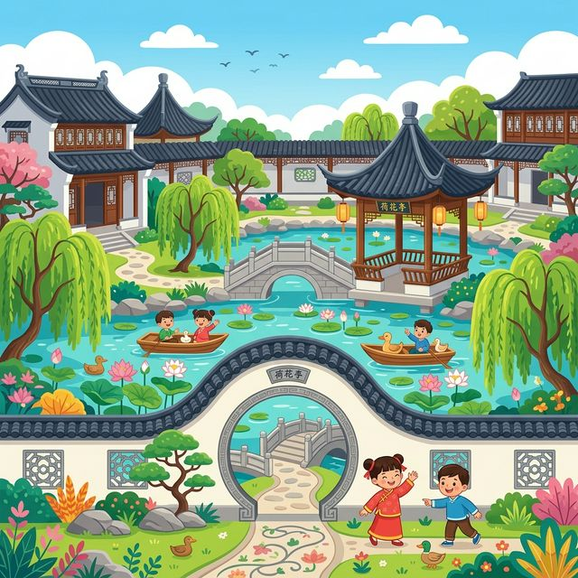
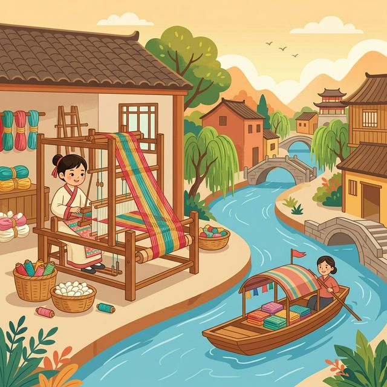

亲爱的小探险家，有一句中国古话叫“上有天堂，下有苏杭”，欢迎来到美丽如画的苏州！
这里有精巧的古典园林、流淌的小河和轻声细语的评弹。让我们一起走进这幅江南水乡的画卷吧！
🗺️ 1. 核心知识点
🎒 2. 出发准备
📖 3. 趣味小故事
🔍 4. 观察记录表
苏州的私家花园非常有名！里面有假山、池水、亭台楼阁，就像迷宫一样有趣。（如：拙政园）
苏州很多房子是建在河边的，人们出行常常需要坐一条叫“乌篷船”的小船在水上飘荡。
苏州是著名的“丝绸之府”。可爱的蚕宝宝吐出细细的丝，工匠们再把它织成漂亮柔软的布料。
一种好听的传统说唱艺术，演员穿着漂亮的衣服，弹着琵琶或者三弦，用苏州话给你讲故事。
在苏州园林里，经常能看到一种奇特的石头叫“太湖石”，它有“瘦、皱、漏、透”的特点，形状千奇百怪！

几百年前，有一个叫马可·波罗的外国大旅行家来到了苏州。他被这里纵横交错的河流和多得数不清的桥梁惊呆了，直呼苏州是“东方的威尼斯”！今天，你依然可以在平江路上感受到那种古老的宁静与美丽。
在游览苏州园林时，你最喜欢园林里的什么景色？是圆圆的月亮洞门，还是水里游来游去的锦鲤？